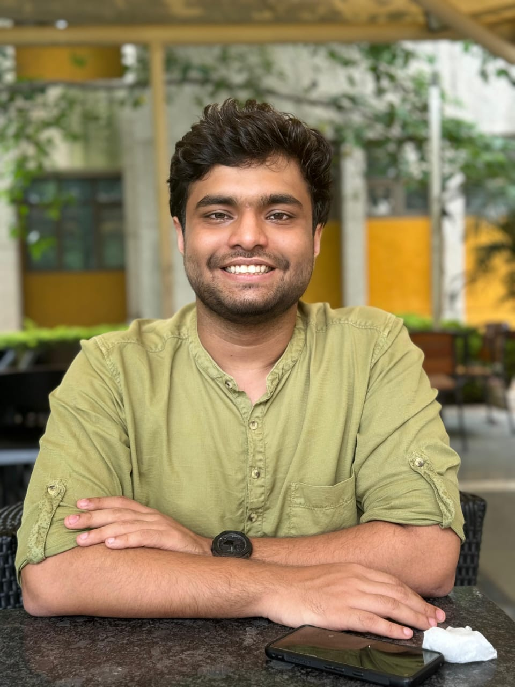
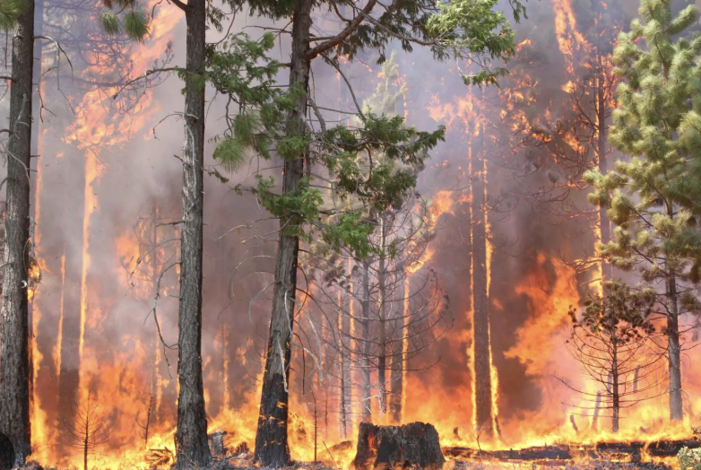
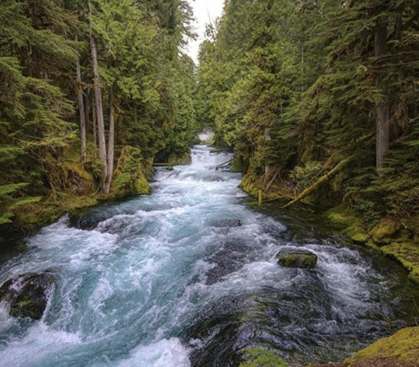
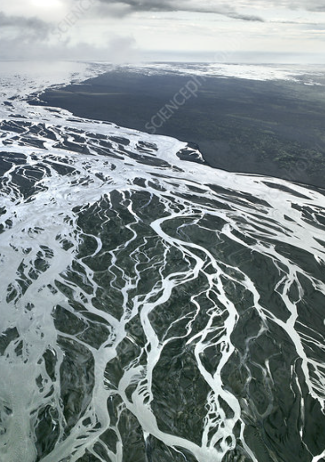
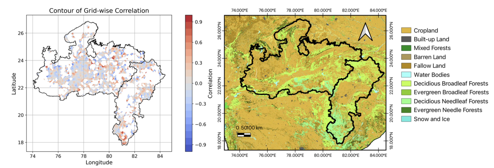
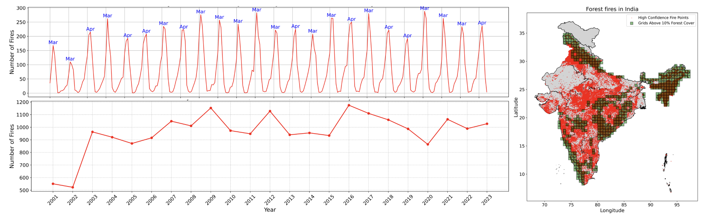
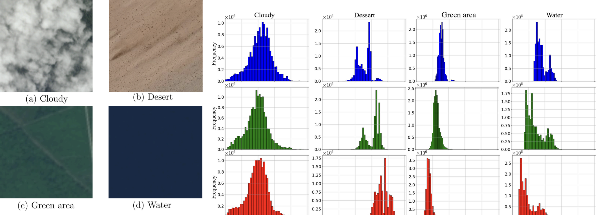
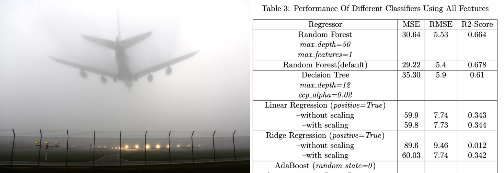

BS-MS student at IISER Bhopal investigating the intersection of machine learning, climate resilience, and geological processes.


Development of AutoML-Fire, an automated machine learning framework designed to forecast fire occurrences by synthesizing multi-source satellite observations with regional meteorological variables across India.

Investigation into Mass-Conserving LSTMs for rainfall-runoff modeling. This research emphasizes physical consistency and mass balance constraints within deep learning architectures for hydrological applications.

Quantifying river morphodynamics and channel migration in high-energy systems. Utilizing remote sensing time-series and machine learning to analyze sediment transport and bar dynamics.

Analyzed satellite-based data on fires, pollution, and land use to study the link between forest fires and air pollution (PM2.5) across diverse Indian regions, focusing on seasonal variations and health impacts.
View on GitHub
Mapped nationwide forest fire hotspots using high-resolution satellite data. Examined how fire activity patterns vary specifically by regional geography, climate seasonality, and native forest classifications.
View on GitHub
Developed a classification model using machine learning and image pre-processing techniques to improve identification accuracy for satellite imagery.
View on GitHub
Developed a spatiotemporal predictive model for extreme visibility events over the Indo-Gangetic plane using real-world meteorological station data and rigorous machine learning preprocessing workflows.
View on GitHubBS-MS in Geology | CPI: 9.18
2021 – 2026HSC (High School) | 96%
2021